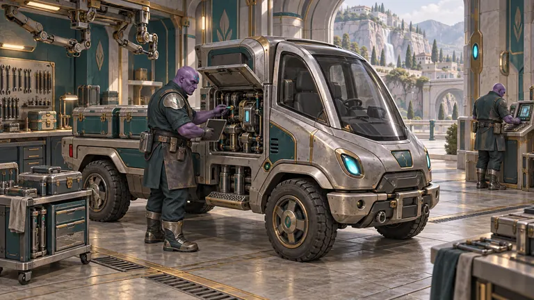

Hiring
Careers
If you want to build a world you can walk, this is the letter. Since November 18, 2025, Sherif Botros has run Autonomicity Games solo and fully AI-assisted. The studio plans to hire. Executives are included. Today it is still one person.
The direction is older than the company. Since 2003 he has followed TOLC (True Original Lord Creator), his north star, toward the world's problems, including global diplomacy and realistic abundance. That direction became the video game Powrush. Building Powrush became Ra-Thor, the system behind Rathor.ai. Ra-Thor now helps build Powrush-MMO, and Living Thunder, the comic and animated series. The game is in development. Online play is not live. The work on the table is a climate you walk, a harvest done with mercy, and a resource-based economy you learn by playing.
Autonomicity Games Inc. was founded in Canada on March 17, 2016. The name has been a play on AGI since 2016. While the vision took shape, the company stayed independent.
If this is your work, write to careers@acitygames.com. Say who you are, and what you would build.